记录自己idea的个性化设置。 记得定期将自己的setting导出，新环境直接导入就好了。 file->export setting
idea插件
热部署jRebel
https://blog.csdn.net/xingbaozhen1210/article/details/81093041
Mybatis Plugin
- 提供Mapper接口与配置文件中对应SQL的导航
- 编辑XML文件时自动补全..等
File->settings->左上角搜索plugin->选择marketplace->输入Mybatis Plugin，回车搜索。 筛选结果有free mybatis plugin，和mybatis plugin。这里安装free的就好，免费版的已经可以满足日常使用需求。
彩色进度条
Plugins->Marketplace，搜索Nyan Progress Bar，一个彩色的进度条。
下划线->驼峰，互相转换
插件名：CamelCase 支持多种方式互相转换。快捷键：Shift + Alt + u。 可以屏蔽不用的格式：settings->Editor->Camel Case。
lombok
lombok插件用来避免使用lombok的注解(@Data@AllArgsConstructor等)，显示编译错误的红色标记。
阿里巴巴Java开发规约插件p3c
2017年初，阿里公开了java代码规范标准手册，《阿里巴巴Java开发手册》。 然后阿里基于该手册，开发了一款插件。github地址
idea插件中心搜索Alibaba Java Coding Guidelines，下载并重启idea。
安装mybatis-generator(自动生成三件套)
官网：http://www.mybatis.org/generator/ github：https://github.com/mybatis/generator/releases 在pom.xml中添加如下插件：
|
|
加入配置文件：
|
|
需要修改配置文件头部mysql-connector-java的路径，改为本地驱动包路径。(在本地maven仓库中找)
需要注意connector的版本号。
所有配置含义： https://www.jianshu.com/p/e09d2370b796
git commit template
git 提交模板
注释模板
- 类注释模板
File ---> Setting ---> Editor ---> File and Code Templates ---> Includes --->File Header
|
|
idea设置页的下边，有变量的解释
- 方法注释模板
File ---> Setting ---> Editor ---> Live Templates点击右边上面那个绿色的+号，选择Template Group双击，然后弹出一个窗口，起名，然后点击ok 然后在列表中，选择刚才新建的Template Group，再次点击右上角的绿色加号，选择第一个选项 live Template 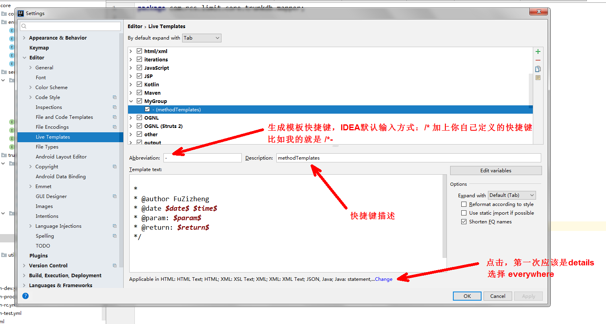 注释模板中$…$中间的参数要与你刚才设置的参数名一一对应 按下 /* 加上你定义的快捷键，再按tab就能生成方法模板了~ ps:为了只按/+自定义的快捷键，我们可以在模板的顶端，注意要顶格， 加上两个**完成后点击应用ok~
提供两种模板：
|
|
|
|
公共方法模板
很多重复代码，完全可以通过idea的模板功能实现，例如api的请求方法。
参照上边的方法继续添加模板，Abbreviation填写@符号，因为controller方法顶部肯定要使用注解。
|
|
stream模板
例如，下面这段代码对字符串集合进行过滤，并转成一个新的集合：
|
|
又比如，我们要转换成 Set 的时候，需要写成这样：.collect(Collectors.toSet())，还有 joining 和 groupingBy之类。
为什么不对 collect 方法再简化一下，以让它更人性化一些，比如同样的一段代码，为什么不设计成下面这样：
|
|
因为没有设计成这样，导致我们在代码中不得不一遍又一遍地使用 Collectors.toXXX, 这就烦躁了。 可以通过 Live Templates(实时模板) 来解决前面提到的问题。
新建 Stream Live Templates：
File -> Setting -> Editor -> LiveTemplates：
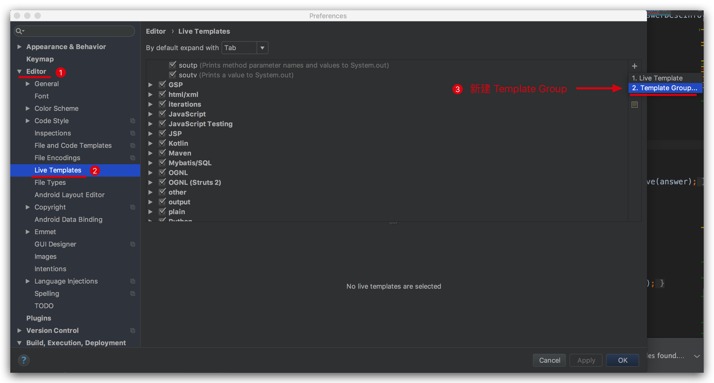
新建一个 Template Group , 取名为 Stream： 创建完成后，选中 Stream, 新建一个实时模板： 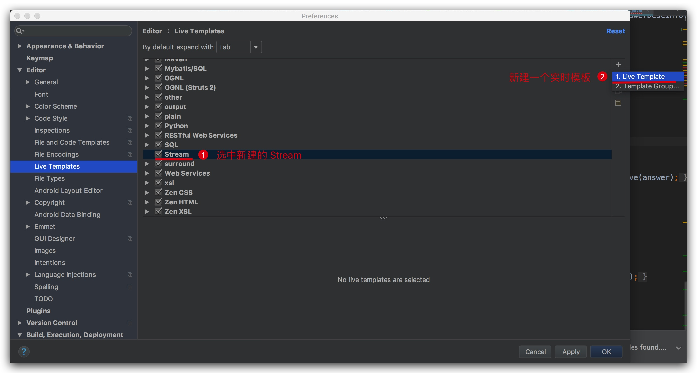
创建一个 toList 代码片段模板： 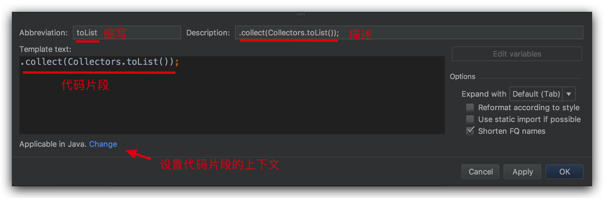 注意：代码片段的上下文选 Java -> other 设置完成后，让我们在实战中看下效果吧！ 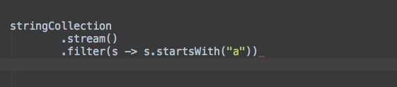
顺手把其他常用的模板设置一下。除了上面演示的 toList外, toSet，groupingBy和join使用也相当普遍，我们也来设置一下，方法与上面大同小异，这里就不一一贴图了，贴上代码片段内容：
|
|
PS: 特殊变量$END$用来在代码片段生成后，确定光标位置，这样你就可以直接输入相关代码了，比如，定义 join 连接分隔符等。
idea快捷键
部分快捷键不好用时，注意与其他软件的热键冲突
ctrl
| 键位 | 介绍 |
|---|---|
| Ctrl + F | 在当前文件进行文本查找 （必备） |
| Ctrl + R | 在当前文件进行文本替换 （必备） |
| Ctrl + Z | 撤销 （必备） |
| Ctrl + Y | 删除光标所在行 或 删除选中的行 （必备） |
| Ctrl + X | 剪切光标所在行 或 剪切选择内容 |
| Ctrl + C | 复制光标所在行 或 复制选择内容 |
| Ctrl + D | 复制光标所在行 或 复制选择内容，并把复制内容插入光标位置下面 （必备） |
| Ctrl + W | 递进式选择代码块。可选中光标所在的单词或段落，连续按会在原有选中的基础上再扩展选中范围 （必备） |
| Ctrl + E | 显示最近打开的文件记录列表 |
| Ctrl + N | 根据输入的 类名 查找类文件 |
| Ctrl + G | 在当前文件跳转到指定行处 |
| Ctrl + J | 插入自定义动态代码模板 |
| Ctrl + P | 方法参数提示显示 |
| Ctrl + Q | 光标所在的变量 / 类名 / 方法名等上面（也可以在提示补充的时候按），显示文档内容 |
| Ctrl + U | 前往当前光标所在的方法的父类的方法 / 接口定义 |
| Ctrl + B | 进入光标所在的方法/变量的接口或是定义出，等效于 Ctrl + 左键单击 |
| Ctrl + K | 版本控制提交项目，需要此项目有加入到版本控制才可用 |
| Ctrl + T | 版本控制更新项目，需要此项目有加入到版本控制才可用 |
| Ctrl + H | 显示当前类的层次结构 |
| Ctrl + O | 选择可重写的方法 |
| Ctrl + I | 选择可继承的方法 |
| Ctrl + + | 展开代码 |
| Ctrl + - | 折叠代码 |
| Ctrl + / | 注释光标所在行代码，会根据当前不同文件类型使用不同的注释符号 （必备） |
| Ctrl + [ | 移动光标到当前所在代码的花括号开始位置 |
| Ctrl + ] | 移动光标到当前所在代码的花括号结束位置 |
| Ctrl + F1 | 在光标所在的错误代码出显示错误信息 |
| Ctrl + F3 | 调转到所选中的词的下一个引用位置 |
| Ctrl + F4 | 关闭当前编辑文件 |
| Ctrl + F8 | 在 Debug 模式下，设置光标当前行为断点，如果当前已经是断点则去掉断点 |
| Ctrl + F9 | 执行 Make Project 操作 |
| Ctrl + F11 | 选中文件 / 文件夹，使用助记符设定 / 取消书签 |
| Ctrl + F12 | 弹出当前文件结构层，可以在弹出的层上直接输入，进行筛选 |
| Ctrl + Tab | 编辑窗口切换，如果在切换的过程又加按上delete，则是关闭对应选中的窗口 |
| Ctrl + Enter | 智能分隔行 |
| Ctrl + End | 跳到文件尾 |
| Ctrl + Home | 跳到文件头 |
| Ctrl + Space | 基础代码补全，默认在 Windows 系统上被输入法占用，需要进行修改，建议修改为 Ctrl + 逗号 （必备） |
| Ctrl + Delete | 删除光标后面的单词或是中文句 |
| Ctrl + BackSpace | 删除光标前面的单词或是中文句 |
| Ctrl + 1,2,3…9 | 定位到对应数值的书签位置 |
| Ctrl + 左键单击 | 在打开的文件标题上，弹出该文件路径 |
| Ctrl + 光标定位 | 按 Ctrl 不要松开，会显示光标所在的类信息摘要 |
| Ctrl + 左方向键 | 光标跳转到当前单词 / 中文句的左侧开头位置 |
| Ctrl + 右方向键 | 光标跳转到当前单词 / 中文句的右侧开头位置 |
| Ctrl + 前方向键 | 等效于鼠标滚轮向前效果 |
| Ctrl + 后方向键 | 等效于鼠标滚轮向后效果 |
alt
| 键位 | 介绍 |
|---|---|
| Alt + ` | 显示版本控制常用操作菜单弹出层 |
| Alt + Q | 弹出一个提示，显示当前类的声明 / 上下文信息 |
| Alt + F1 | 显示当前文件选择目标弹出层，弹出层中有很多目标可以进行选择 |
| Alt + F2 | 对于前面页面，显示各类浏览器打开目标选择弹出层 |
| Alt + F3 | 选中文本，逐个往下查找相同文本，并高亮显示 |
| Alt + F7 | 查找光标所在的方法 / 变量 / 类被调用的地方 |
| Alt + F8 | 在 Debug 的状态下，选中对象，弹出可输入计算表达式调试框，查看该输入内容的调试结果 |
| Alt + Home | 定位 / 显示到当前文件的 Navigation Bar |
| Alt + Enter | IntelliJ IDEA 根据光标所在问题，提供快速修复选择，光标放在的位置不同提示的结果也不同 （必备） |
| Alt + Insert | 代码自动生成，如生成对象的 set / get 方法，构造函数，toString() 等 |
| Alt + 左方向键 | 按左方向切换当前已打开的文件视图 |
| Alt + 右方向键 | 按右方向切换当前已打开的文件视图 |
| Alt + 前方向键 | 当前光标跳转到当前文件的前一个方法名位置 |
| Alt + 后方向键 | 当前光标跳转到当前文件的后一个方法名位置 |
| Alt + 1,2,3…9 | 显示对应数值的选项卡，其中 1 是 Project 用得最多 |
shift
| 键位 | 介绍 |
|---|---|
| Shift + F1 | 如果有外部文档可以连接外部文档 |
| Shift + F2 | 跳转到上一个高亮错误 或 警告位置 |
| Shift + F3 | 在查找模式下，查找匹配上一个 |
| Shift + F4 | 对当前打开的文件，使用新Windows窗口打开，旧窗口保留 |
| Shift + F6 | 对文件 / 文件夹 重命名 |
| Shift + F7 | 在 Debug 模式下，智能步入。断点所在行上有多个方法调用，会弹出进入哪个方法 |
| Shift + F8 | 在 Debug 模式下，跳出，表现出来的效果跟 F9 一样 |
| Shift + F9 | 等效于点击工具栏的 Debug 按钮 |
| Shift + F10 | 等效于点击工具栏的 Run 按钮 |
| Shift + F11 | 弹出书签显示层 |
| Shift + Tab | 取消缩进 |
| Shift + ESC | 隐藏当前 或 最后一个激活的工具窗口 |
| Shift + End | 选中光标到当前行尾位置 |
| Shift + Home | 选中光标到当前行头位置 |
| Shift + Enter | 开始新一行。光标所在行下空出一行，光标定位到新行位置 |
| Shift + 左键单击 | 在打开的文件名上按此快捷键，可以关闭当前打开文件 |
| Shift + 滚轮前后滚动 | 当前文件的横向滚动轴滚动 |
Ctrl + Alt
| 键位 | 介绍 |
|---|---|
| Ctrl + Alt + U | 类图 |
| Ctrl + Alt + L | 格式化代码，可以对当前文件和整个包目录使用 （必备） |
| Ctrl + Alt + O | 优化导入的类，可以对当前文件和整个包目录使用 （必备） |
| Ctrl + Alt + I | 光标所在行 或 选中部分进行自动代码缩进，有点类似格式化 |
| Ctrl + Alt + T | 对选中的代码弹出环绕选项弹出层 |
| Ctrl + Alt + J | 弹出模板选择窗口，讲选定的代码加入动态模板中 |
| Ctrl + Alt + H | 调用层次 |
| Ctrl + Alt + B | 在某个调用的方法名上使用会跳到具体的实现处，可以跳过接口 |
| Ctrl + Alt + V | 快速引进变量 |
| Ctrl + Alt + Y | 同步、刷新 |
| Ctrl + Alt + S | 打开 IntelliJ IDEA 系统设置 |
| Ctrl + Alt + F7 | 显示使用的地方。寻找被该类或是变量被调用的地方，用弹出框的方式找出来 |
| Ctrl + Alt + F11 | 切换全屏模式 |
| Ctrl + Alt + Enter | 光标所在行上空出一行，光标定位到新行 |
| Ctrl + Alt + Home | 弹出跟当前文件有关联的文件弹出层 |
| Ctrl + Alt + Space | 类名自动完成 |
| Ctrl + Alt + 前方向键 | 在查找模式下，跳到上个查找的文件 |
| Ctrl + Alt + 后方向键 | 在查找模式下，跳到下个查找的文件 |
| Ctrl + Alt + 左方向键 | 退回到上一个操作的地方 （必备） |
| Ctrl + Alt + 右方向键 | 前进到上一个操作的地方 （必备） |
和英特尔核心显卡全局快捷键冲突，解决方式：
win+s，搜索：英特尔显卡控制中心。
左侧找到系统->热键->如果现在是关着的，也将热键重新开关一次，回idea发现Ctrl + Alt + 左(右)方向键 已经好使了。
Ctrl + Shift
| 键位 | 介绍 |
|---|---|
| Ctrl + Shift + F | 根据输入内容查找整个项目 或 指定目录内文件 （必备） |
| Ctrl + Shift + R | 根据输入内容替换对应内容，范围为整个项目 或 指定目录内文件 （必备） |
| Ctrl + Shift + J | 自动将下一行合并到当前行末尾 （必备） |
| Ctrl + Shift + Z | 取消撤销 （必备） |
| Ctrl + Shift + W | 递进式取消选择代码块。可选中光标所在的单词或段落，连续按会在原有选中的基础上再扩展取消选中范围 （必备） |
| Ctrl + Shift + N | 通过文件名定位 / 打开文件 / 目录，打开目录需要在输入的内容后面多加一个正斜杠 （必备） |
| Ctrl + Shift + U | 对选中的代码进行大 / 小写轮流转换(有时键盘左边的ctrl+shift会不好用，可能被其他程序或系统占用了？试试右边的) |
| Ctrl + Shift + T | 对当前类生成单元测试类，如果已经存在的单元测试类则可以进行选择 |
| Ctrl + Shift + C | 复制当前文件磁盘路径到剪贴板 |
| Ctrl + Shift + V | 弹出缓存的最近拷贝的内容管理器弹出层 |
| Ctrl + Shift + E | 显示最近修改的文件列表的弹出层 |
| Ctrl + Shift + H | 显示方法层次结构 |
| Ctrl + Shift + B | 跳转到类型声明处 |
| Ctrl + Shift + I | 快速查看光标所在的方法 或 类的定义 |
| Ctrl + Shift + A | 查找动作 / 设置 |
| Ctrl + Shift + / | 代码块注释 （必备） |
| Ctrl + Shift + [ | 选中从光标所在位置到它的顶部中括号位置 |
| Ctrl + Shift + ] | 选中从光标所在位置到它的底部中括号位置 |
| Ctrl + Shift + + | 展开所有代码 |
| Ctrl + Shift + - | 折叠所有代码 |
| Ctrl + Shift + F7 | 高亮显示所有该选中文本，按Esc高亮消失 |
| Ctrl + Shift + F8 | 在 Debug 模式下，指定断点进入条件 |
| Ctrl + Shift + F9 | 编译选中的文件 / 包 / Module |
| Ctrl + Shift + F12 | 编辑器最大化 |
| Ctrl + Shift + Space | 智能代码提示 |
| Ctrl + Shift + Enter | 自动结束代码，行末自动添加分号 （必备） |
| Ctrl + Shift + Backspace | 退回到上次修改的地方 |
| Ctrl + Shift + 1,2,3…9 | 快速添加指定数值的书签 |
| Ctrl + Shift + 左方向键 | 在代码文件上，光标跳转到当前单词 / 中文句的左侧开头位置，同时选中该单词 / 中文句 |
| Ctrl + Shift + 右方向键 | 在代码文件上，光标跳转到当前单词 / 中文句的右侧开头位置，同时选中该单词 / 中文句 |
| Ctrl + Shift + 左方向键 | 在光标焦点是在工具选项卡上，缩小选项卡区域 |
| Ctrl + Shift + 右方向键 | 在光标焦点是在工具选项卡上，扩大选项卡区域 |
| Ctrl + Shift + 前方向键 | 光标放在方法名上，将方法移动到上一个方法前面，调整方法排序 |
| Ctrl + Shift + 后方向键 | 光标放在方法名上，将方法移动到下一个方法前面，调整方法排序 |
Alt + Shift
| 键位 | 介绍 |
|---|---|
| Alt + Shift + N | 选择 / 添加 task |
| Alt + Shift + F | 显示添加到收藏夹弹出层 |
| Alt + Shift + C | 查看最近操作项目的变化情况列表 |
| Alt + Shift + F | 添加到收藏夹 |
| Alt + Shift + I | 查看项目当前文件 |
| Alt + Shift + F7 | 在 Debug 模式下，下一步，进入当前方法体内，如果方法体还有方法，则会进入该内嵌的方法中，依此循环进入 |
| Alt + Shift + F9 | 弹出 Debug 的可选择菜单 |
| Alt + Shift + F10 | 弹出 Run 的可选择菜单 |
| Alt + Shift + 左键双击 | 选择被双击的单词 / 中文句，按住不放，可以同时选择其他单词 / 中文句 |
| Alt + Shift + 前方向键 | 移动光标所在行向上移动 |
| Alt + Shift + 后方向键 | 移动光标所在行向下移动 |
Ctrl + Shift + Alt
| 键位 | 介绍 |
|---|---|
| Ctrl + Shift + Alt + V | 无格式黏贴 |
| Ctrl + Shift + Alt + N | 前往指定的变量 / 方法 |
| Ctrl + Shift + Alt + S | 打开当前项目设置 |
| Ctrl + Shift + Alt + C | 复制参考信息 |
其他
| 键位 | 介绍 |
|---|---|
| F2 | 跳转到下一个高亮错误 或 警告位置 （必备） |
| F3 | 在查找模式下，定位到下一个匹配处 |
| F4 | 编辑源 |
| F7 | 在 Debug 模式下，进入下一步，如果当前行断点是一个方法，则进入当前方法体内，如果该方法体还有方法，则不会进入该内嵌的方法中 |
| F8 | 在 Debug 模式下，进入下一步，如果当前行断点是一个方法，则不进入当前方法体内 |
| F9 | 在 Debug 模式下，恢复程序运行，但是如果该断点下面代码还有断点则停在下一个断点上 |
| F11 | 添加书签 |
| F12 | 回到前一个工具窗口 |
| Tab | 缩进 |
| ESC | 从工具窗口进入代码文件窗口 |
| 连按两次Shift | 弹出 Search Everywhere 弹出层 |
自定义快捷键
选择要启动的项目：settings->keymap->搜索Other | Select Run/Debug Configuration
编辑为：ctrl+alt+\
JRebel启动项目：搜索Debug with JRebel
编辑为：ctrl+\
idea问题
idea输入法不跟随
jetbrains官方已经在2018.2版本修复了这个问题。但是还是需要新版jdk的加持。 目前可以确定，idea–2018.3版本+jdk1.8.0_191没有问题。 win10自带的输入法也是没有问题的。 如果jdk是升级上来的，就是本机安装的事1.8.0_191以下的版本，然后通过官方升级上来的，貌似就不行。建议去官网重新下载新版jdk。 这个问题不同环境需要不同的解决方法，多试几种就是了。
先摘抄几种网上的方法
方法1： idea界面按ctrl+shift+a，输入switch IDE Boot JDK，选择自己安装的jdk，默认是idea自带的jre，貌似是有bug。选择完之后重启
方法2： 增加一个环境变量即可。 64位增加的名称为IDEA_JDK_64，32位的为IDEA_JDK，值为本机jdk根目录。 比较靠谱的就这两种，还有很多说jdk降级，输入法降级的，不建议。
idea断点问题
当前项目处于分布式环境，在其中一个服务 打上断点后，如果debug选项卡切换到其他提供者上， 注意是debug的选项卡，会发现断点失效了，f8和f9都不好用。 正常的断点标识是：一个小红圈，中间有个对勾，表明当前断点生效。 失效后的断点:红圈内的对勾没有了。此时切回断点所在服务的debug选项卡即可。
IDEA自动重置LanguageLevel和JavaCompiler版本的问题
一旦Maven项目有变化，发生自动的update时，IDEA会重置这些配置。 解决办法就是在pom.xml中指定maven-compiler-plugin的版本，该版本会同时影响LanguageLevel和JavaCompiler，修改后默认就成了这里设置的版本。
|
|
idea错误信息无法复制
当鼠标悬浮在错误信息上时，idea会提示错误信息，现在选中之后却无法复制。 windows： 鼠标光标方法报错的地方，待错误提示出现后，键盘按住 Alt，同时点击鼠标左键(不用ctrl+c)，ctrl+V到百度即可。
mac： 鼠标🖱️悬停在错误信息上，按住option，左键点击，然后黏贴到百度。
另外，鼠标悬浮在错误信息上，在idea最下边的位置也可以看到错误信息，可以右键复制。
Error:(73, 52) java: -source 1.5 中不支持 diamond 运算符 (请使用 -source 7 或更高版本以启用 diamond 运算符)
已经在project Structure中设置了项目的jdk版本，build还是报这个错。
解决：
设置搜索java compiler，改成自己的jdk版本。如果还不行，idea重新下载jar包试试。
idea使用优化
自动补全快捷键失效
自动补全快捷键设置方式：
打开idea设置，搜索code completion
Ctrl+空格
Ctrl+Shift+空格
这两组是idea默认的快捷键，如果失效了，很可能是和其他软件的全局快捷键冲突了。
比如windows切换中英文的快捷键，win10自带输入法，中/英文模式切换的快捷键，默认有两个
Ctrl+空格和Shift，我们把Ctrl+空格这个快捷键取消即可。
窗口开多后自动关闭
idea 默认的窗口数量只有10个，开多了会自动把前边的关掉，可以将多开数量设置wier30。 File->Settings->Editor->General->Editor Tabs，找到Tab limit，将值设置为30。
去掉重复代码检查
File->Settings->Editor->Inspections->
右侧列表寻找General，去掉Duplicated code fragment的勾选。
去掉Mybatis-xml文件的浅黄背景色
-
File->Settings->Editor->Inspections-> 右侧列表寻找
SQL，去掉No data sources configured和SQL dialect detection勾选项。 -
File->Settings->Editor->Color Scheme->General 在右侧列表寻找code下拉选，找到
Injected language fragment，去掉右侧Background勾选。
从Coding拉取代码
File->New->Project from Version Control->Git 在URL一行填写Coding上项目的地址，如： https://git.coding.net/test.git
将项目上传到Coding
登陆自己的Coding，鼠标移到右上角的加号，点击项目 输入必填的项目名称和项目地址，拉到最下面添加项目成员，其他全部默认，点击新建项目，然后进入到项目管理界面。 找到右侧的项目地址，复制。
将Idea中的项目上传
- 回到Idea，点击工具栏的VCS，选择
Import into Version Control，选择Create Git Repository，选择想要上传到Coding的项目。 - 选择到项目根目录(项目名位置)，右键选择Git，选择+ Add。
- 再次右键项目，选择Git->Repository->remotes，点击加号，name为origin，URL为刚才复制的Coding项目地址。
- 然后进行第一次提交。点击工具栏的VCS->Commit(Ctrl+T)，输入Commit Message，点击右下角Commit位置的下拉选，选择Commit and push(Ctrl+Alt+K)，然后点击Push。 然后就其他人就可以拉取代码了。
提交时报错：
|
|
尝试建议的指令：
git branch --set-upstream master origin/master
无果。
解决：
到项目的根目录，以此执行：
git add .
git commit -m 'first commit'
git push -u origin master
push成功，然后就可以通过ideactrl+K上传，ctrl+T拉取代码了。
通过命令行上传
- 在本地项目的根目录打开git bush或Terminal，输入
git init，初始化仓库。 - 然后执行
git add .、git commit -m 'initialize'，将项目添加并提交的本地缓存区。 - 执行
git remote add origin https://git.coding.net/jingyao/123.git，将本地仓库和远程仓库关联。 - 然后可以把本地仓库的内容推送到远程仓库上
git push -u origin master，推送需要输入Coding的用户名和密码。 - 如果想不是每次推送都输入账号密码，可以添加SSH公钥，参考：https://coding.net/help/doc/git/ssh-key.html
无需插件生成serialVersionUID
默认情况下Intellij IDEA不会提示继承了Serializable接口的类生成serialVersionUID的警告。如果需要生
成serialVersionUID，就要在Preferences里面进行设置。
Preferences -> Inspections -> Serialization issues -> Serialization class without 'serialVersionUID
打上勾，这时候，在javabean里面，就可以看到编辑器右边有黄色的提示了，可以点开看看，将光标放到类
名上，按atl＋enter键，就会提示生成serialVersionUID了。
xml文件注释出现顶格、多空格
Settings -> Editor -> Code Style -> XML -> Code Generation
|
|
字体
修改菜单字体
settings->Appearence & Behavior->Appearence，右侧找到Use custom font，修改右侧的字体和字号。
修改java字体
settings->Color Scheme->Color Scheme font，修改右侧的字体。
WenQuanYi Micro Hei Mono
.gitignore
git忽略的原理： git设置本地忽略必须保证git的远程仓库分支上没有这个要忽略的文件，如果远程分支上存在这个文件，本地在设置ignore将不起作用。
所以一般是在.gitignore 文件里面加入 .idea/ workspace.xml 即可
但是如果你这样做之前已经将此文件提交到了git远程仓库，那就需要执行以下命令了：
git rm -r --cached .idea
IDEA设置switch/case代码块自动补齐
settings --> Editor --> Live Templates- 点击右侧加号，选择Templates Group，起一个想要的名字，我写wjy。
- 然后在左侧列表找到刚才新建的名字，选中并点击右侧加号，选择Live Templates
- Abbreviation，写sw，Description写
reate switch/case block - Template text填写如下：
然后右键刚才新建的
1 2 3 4 5 6switch(param){ case param: break; default: break; }sw，选择Change context，勾选java，即可。
关闭idea maven自动刷新
settings->Build,Execution,Deployment->Build Tools->Maven->Importing，Import Maven projects automatically取消该项的勾选。
idea xml文件注释
xml的注释变成了这样，而且是顶在行首的，看起来十分难受。
<!-- 播放量+1-->
settings->Editor->Code style->XML
找到Code Generation选项卡，将Line comment at first column和Block comment at first column前边的勾选去掉。
代码提示不区分大小写
Settings -> Editor -> General -> Code Completion
右侧第一排的match case
tab页多行显示
Settings -> Editor -> General -> Editor Tabs
右侧第一排show tabs in one row
在idea中使用maven的tips
使用ctrl+alt+s打开idea的设置，找到maven的设置，关注两行配置：
Maven home path：这里可以选择idea自带的maven，它的位置是idea的安装位置\plugins\maven
该路径下可以找到配置文件settings.xml。这里也可以选择本机自己装的maven，他的路径一般类似：
D:\install\apache-maven-3.8.4，这个路径下也可以找到settings.xml。
user settings file：选择settings.xml文件的位置，如果选择了就会忽略上边路径内的settings.xml。
注意：这里的配置，只会影响idea的maven模块的构建。
如果你在idea中打开Terminal，通过这个控制台使用maven命令，那么这里使用的是本机自带的maven的配置，如果这里打包出现问题，那么肯定是没修改本机maven的settings.xml。
所以还是建议idea使用本机maven，这样只需要修改本机maven的settings.xml就可以了，保证idea的maven构建和本机maven构建一致，不会出现在idea里打包没问题，在Terminal打包失败的情况。
idea debug
Debug界面&基本功能
首先看下IDEA中Debug模式下的界面，随着idea版本的更新Debug模式的图标设计虽有微调改动，但是功能大体相通。 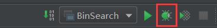
上图爬虫的图标就是Debug模式运行键，绿色三角形图标是正常的Run模式。
如下是在IDEA中启动Debug模式，进入断点后的界面。简单说下图中标注的8个地方：
图1.1
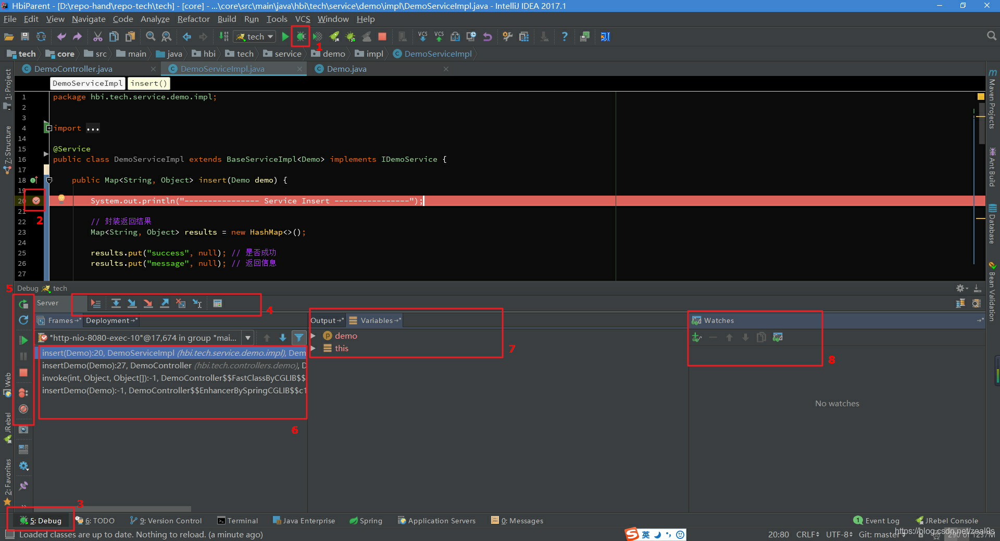
- 以Debug模式启动服务，左边的一个按钮则是以Run模式启动。在开发中，我一般会直接启动Debug模式，方便随时调试代码。
- 断点：在左边行号栏单击左键，或者快捷键Ctrl+F8 打上/取消断点，断点行的颜色可自己去设置。
- Debug窗口：访问请求到达第一个断点后，会自动激活Debug窗口。如果没有自动激活，可以去设置里设置，如图1.2。
- 调试按钮：一共有8个按钮，调试的主要功能就对应着这几个按钮，鼠标悬停在按钮上可以查看对应的快捷键。在菜单栏Run里可以找到同样的对应的功能，如图1.4。
- 服务按钮：可以在这里关闭/启动服务，设置断点等。
- 方法调用栈：这里显示了该线程调试所经过的所有方法，勾选右上角的[Show All Frames]按钮，就不会显示其它类库的方法了，否则这里会有一大堆的方法。
- Variables：在变量区可以查看当前断点之前的当前方法内的变量。
- Watches：查看变量，可以将Variables区中的变量拖到Watches中查看。
图1.2：在设置里勾选Show debug window on breakpoint，则请求进入到断点后自动激活Debug窗口
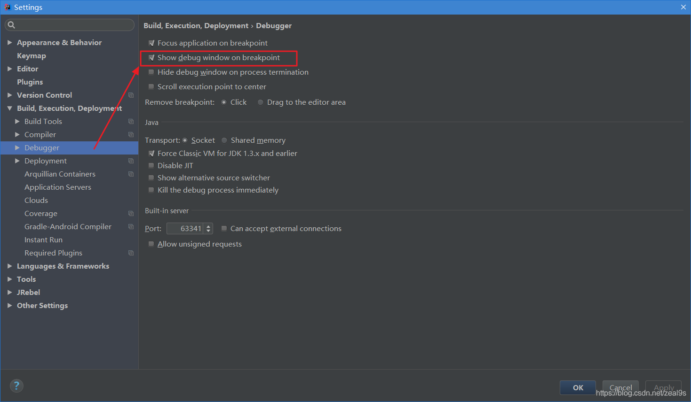
图1.3：如果你的IDEA底部没有显示工具栏或状态栏，可以在View里打开，显示出工具栏会方便我们使用。可以自己去尝试下这四个选项。
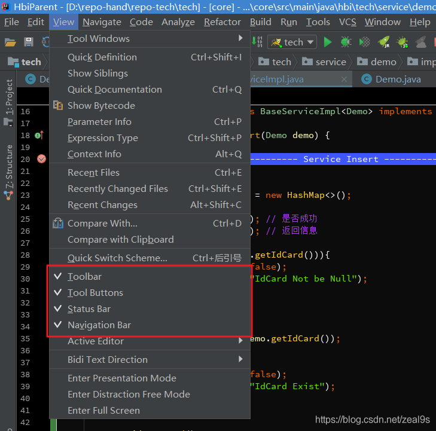
图1.4：在菜单栏Run里有调试对应的功能，同时可以查看对应的快捷键。
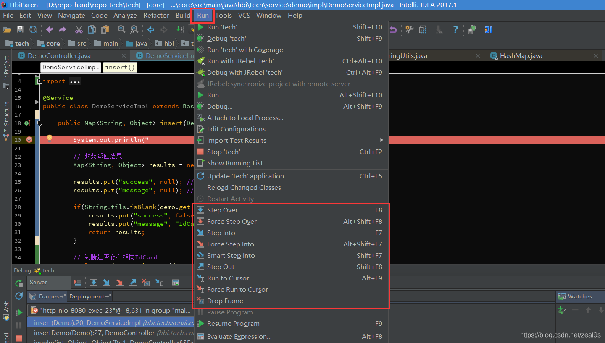
基本用法&快捷键
Debug调试的功能主要对应着图一中4和5两组按钮。
第一组按钮
共8个按钮，从左到右依次如下：
[图2.1]

- Show Execution Point (Alt + F10)：如果你的光标在其它行或其它页面，点击这个按钮可跳转到当前代码执行的行。
- Step Over (F8)：步过，一行一行地往下走，如果这一行上有方法不会进入方法。
- Step Into (F7)：步入，如果当前行有方法，可以进入方法内部，一般用于进入自定义方法内，不会进入官方类库的方法，如第25行的put方法。
- Force Step Into (Alt + Shift + F7)：强制步入，能进入任何方法，查看底层源码的时候可以用这个进入官方类库的方法。
- Step Out (Shift + F8)：步出，从步入的方法内退出到方法调用处，此时方法已执行完毕，只是还没有完成赋值。
- Drop Frame (默认无)：回退断点，后面章节详细说明。
- Run to Cursor (Alt + F9)：运行到光标处，你可以将光标定位到你需要查看的那一行，然后使用这个功能，代码会运行至光标行，而不需要打断点。
- Evaluate Expression (Alt + F8)：计算表达式，后面章节详细说明。
第二组按钮
共7个按钮，从上到下依次如下：
[图2.2]

-
Rerun ‘xxxx’：重新运行程序，会关闭服务后重新启动程序。
-
Update ‘tech’ application (Ctrl + F5)：更新程序，一般在你的代码有改动后可执行这个功能。而这个功能对应的操作则是在服务配置里，如图2.3。
-
Resume Program (F9)：恢复程序，比如，你在第20行和25行有两个断点，当前运行至第20行，按F9，则运行到下一个断点(即第25行)，再按F9，则运行完整个流程，因为后面已经没有断点了。
-
Pause Program：暂停程序，启用Debug。目前没发现具体用法。
-
Stop ‘xxx’ (Ctrl + F2)：连续按两下，关闭程序。有时候你会发现关闭服务再启动时，报端口被占用，这是因为没完全关闭服务的原因，你就需要查杀所有JVM进程了。
-
View Breakpoints (Ctrl + Shift + F8)：查看所有断点，后面章节会涉及到。
-
Mute Breakpoints：静哑断点，哑的断点，选择这个后，所有断点变为灰色，断点失效，按F9则可以直接运行完程序。再次点击，断点变为红色，有效。如果只想使某一个断点失效，可以在断点上右键取消Enabled，如图2.4，则该行断点失效。
[图2.3]
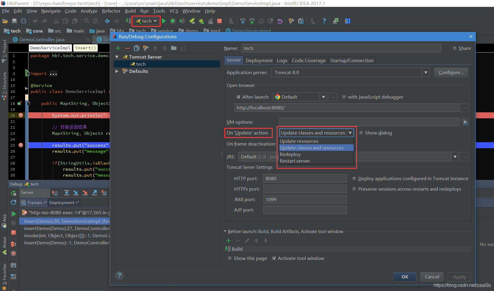
更新程序，On ‘Update’ actions，执行更新操作时所做的事情，一般选择’Update classes and resources’，即更新类和资源文件。一般配合热部署插件会更好用，如JRebel，这样就不用每次更改代码后还要去重新启动服务。
下面的On frame deactivation，在IDEA窗口失去焦点时触发，即一般你从idea切换到浏览器的时候，idea会自动帮你做的事情，一般可以设置Do nothing，频繁切换会比较消耗资源的。
[图2.4] 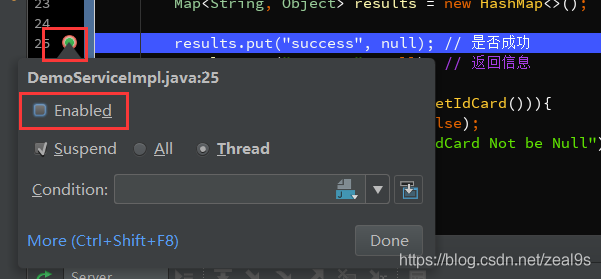
快捷键
Run：Shift + F10 运行最近一次运行的函数 Debug：Shift + F9 运行debug最近一次运行的函数 Run：Alt + Shift + F10 初次运行指定的函数 Debug：Alt + Shift + F9 初次debug运行指定的函数 Stop：Ctrl + F2 停止项目 Step Over：F8 越过当前函数 Forcce Step Over：Alt + Shift + F8 强制越过 Step Into：F7 步入当前函数 Force Step Into：Alt + Shift + F7 强行进入当前函数 Smart Step Into：Shift + F7 只能进入当前函数 Step out：Shift + F8 步出 Resume Program：F9 恢复程序 Evaluate Expression：Alt + F8 计算表达式
变量查看
在Debug过程中，跟踪查看变量的变化是非常必要的，这里就简单说下IDEA中可以查看变量的几个地方。
如下，在IDEA中，参数所在行后面会显示当前变量的值。
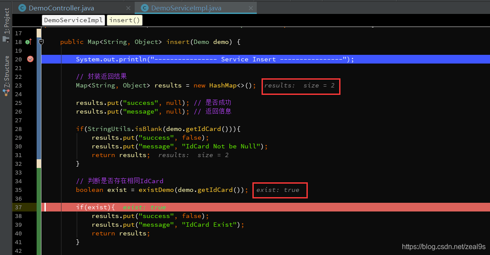
光标悬停到参数上，显示当前变量信息。点击打开详情如图3.3
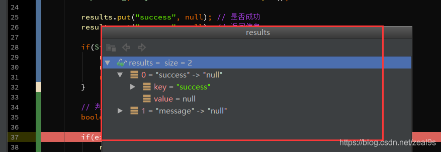
在Variables里查看，这里显示当前方法里的所有变量。 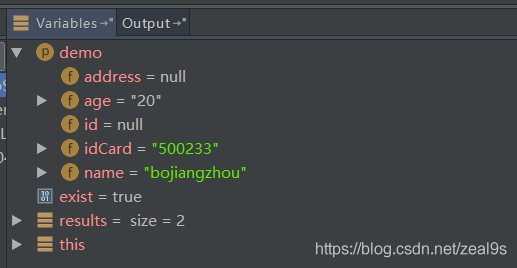
在Watches里，点击New Watch，输入需要查看的变量。或者可以从Variables里拖到Watche里查看。 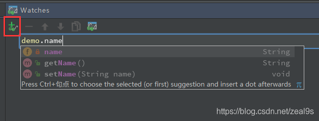
计算表达式
在前面提到的计算表达式如图4.1的按钮，Evaluate Expression (Alt + F8) 。可以使用这个操作在调试过程中计算某个表达式的值，而不用再去打印信息。 求值计算功能在我们debug过程中，可以很方便的查看程序中所有变量的值，也可以临时修改程序中变量的值，这个功能能在一定程度上辅助我们进行代码调试。 图4.1 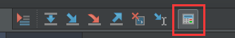
按Alt + F8或按钮，或者可以选中某个表达式再Alt + F8，弹出计算表达式的窗口，如下，回车或点击Evaluate计算表达式的值。 这个表达式不仅可以是一般变量或参数，也可以是方法，当你的一行代码中调用了几个方法时，就可以通过这种方式查看查看某个方法的返回值。
图4.2 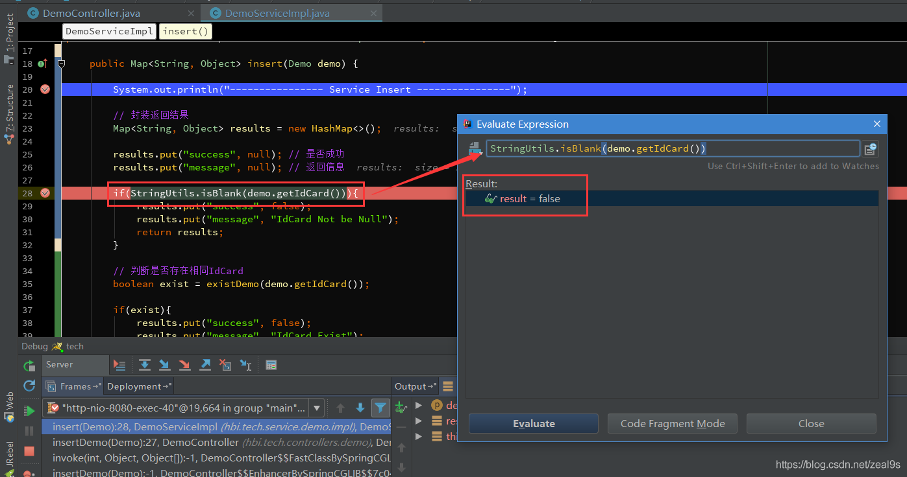
设置变量，在计算表达式的框里，可以改变变量的值，这样就能灵活赋值。 图4.3 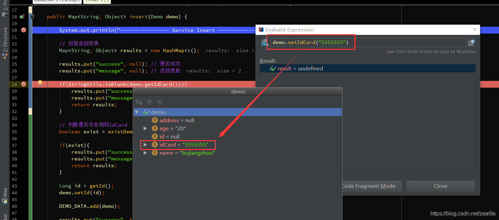
智能步入
想想，一行代码里有好几个方法，怎么只选择某一个方法进入。之前提到过使用Step Into (Alt + F7) 或者 Force Step Into (Alt + Shift + F7)进入到方法内部，但这两个操作会根据方法调用顺序依次进入，这比较麻烦。
那么智能步入就很方便了，智能步入，这个功能在Run里可以看到，Smart Step Into (Shift + F7)，如图5.1 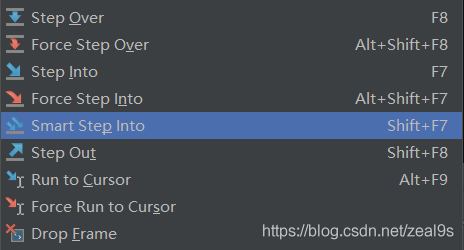
按Shift + F7，会自动定位到当前断点行，并列出需要进入的方法，如图5.2，点击方法进入方法内部。如果只有一个方法，则直接进入，类似Force Step Into。 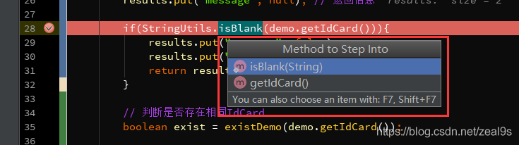
断点条件设置
条件断点就是当满足某个条件（通常是表达式）时，debug断点才会生效；这在循环中debug是非常有用的；例如我们想要在循环体中调试：当某个变量满足某个条件时，需要断点调试，来查看详细的执行流程及变化情况。通过设置断点条件，在满足条件时，才停在断点处，否则直接运行。
通常，当我们在遍历一个比较大的集合或数组时，在循环内设置了一个断点，难道我们要一个一个去看变量的值？那肯定很累，说不定你还错过这个值得重新来一次。
方法一：在断点上右键直接设置当前断点的条件，如图6.1，我设置exist为true时断点才生效。 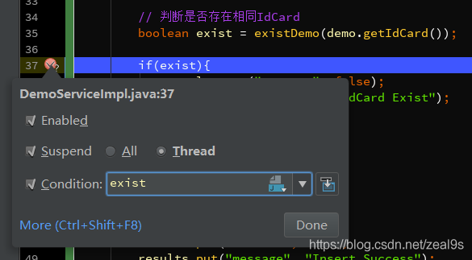
有了条件断点，这样一来，那些不相关和我们不关心的代码就可以直接跳过了。
方法二：点击View Breakpoints (Ctrl + Shift + F8)，查看所有断点。 Java Line Breakpoints 显示了所有的断点，在右边勾选Condition，设置断点的条件。 勾选Log message to console，则会将当前断点行输出到控制台，如图6.3 勾选Evaluate and log，可以在执行这行代码是计算表达式的值，并将结果输出到控制台。 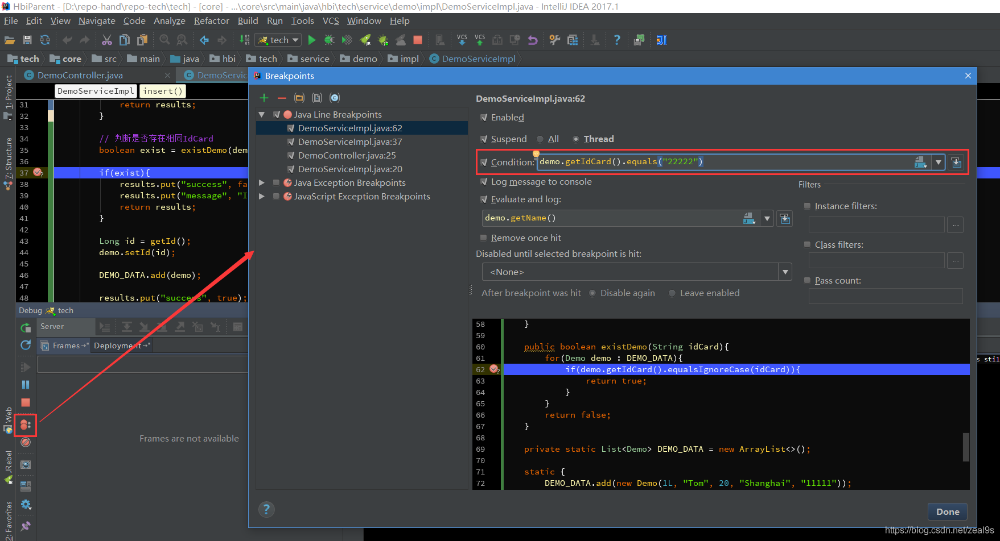
图6.3 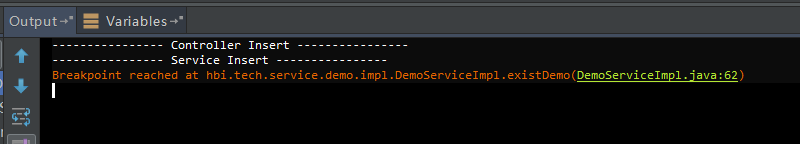
右边的Filters过滤，这些一般情况下不常用，简单说下意思。 Instance filters：实例过滤，输入实例ID(如图6.5中的实例ID)。 Class filters：类过滤，根据类名过滤 Pass count：用于循环中，如果断点在循环中，可以设置该值，循环多少次后停在断点处，之后的循环都会停在断点处。
图6.4 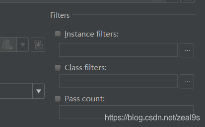
图6.5 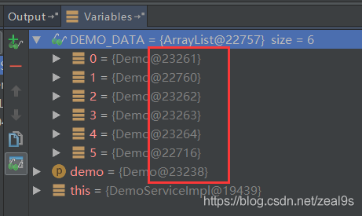
异常断点
通过设置异常断点，在程序中出现需要拦截的异常时，会自动定位到异常行。 如图6.6，点击+号添加Java Exception Breakpoints，添加异常断点。然后输入需要断点的异常类，如图6.7，之后可以在Java Exception Breakpoints里看到添加的异常断点。 我这里添加了一个NullPointerException异常断点，如图6.8，出现空指针异常后，自动定位在空指针异常行。
图6.6 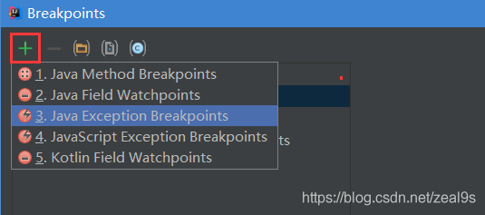
图6.7 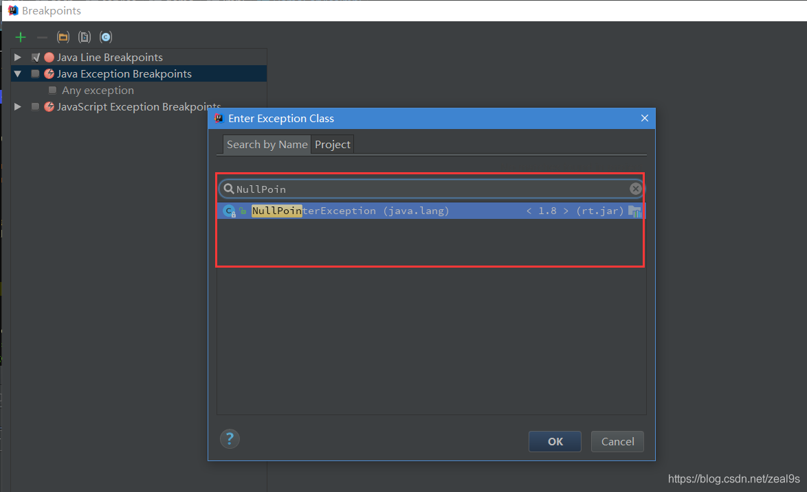
图6.8 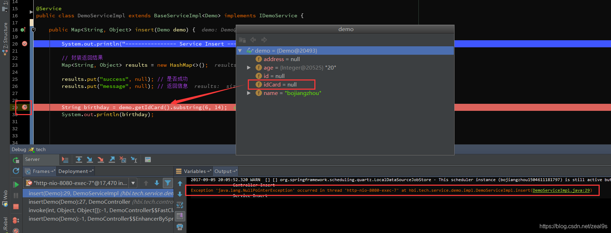
多线程调试
一般情况下我们调试的时候是在一个线程中的，一步一步往下走。但有时候你会发现在Debug的时候，想发起另外一个请求都无法进行了？
那是因为IDEA在Debug时默认阻塞级别是ALL，会阻塞其它线程，只有在当前调试线程走完时才会走其它线程。可以在View Breakpoints里选择Thread，如图7.1，然后点击Make Default设置为默认选项。
图7.1 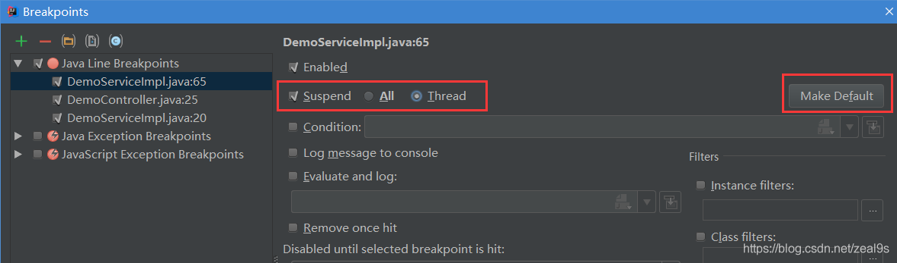
切换线程，在图7.2中Frames的下拉列表里，可以切换当前的线程，如下我这里有两个Debug的线程，切换另外一个则进入另一个Debug的线程。
图7.2 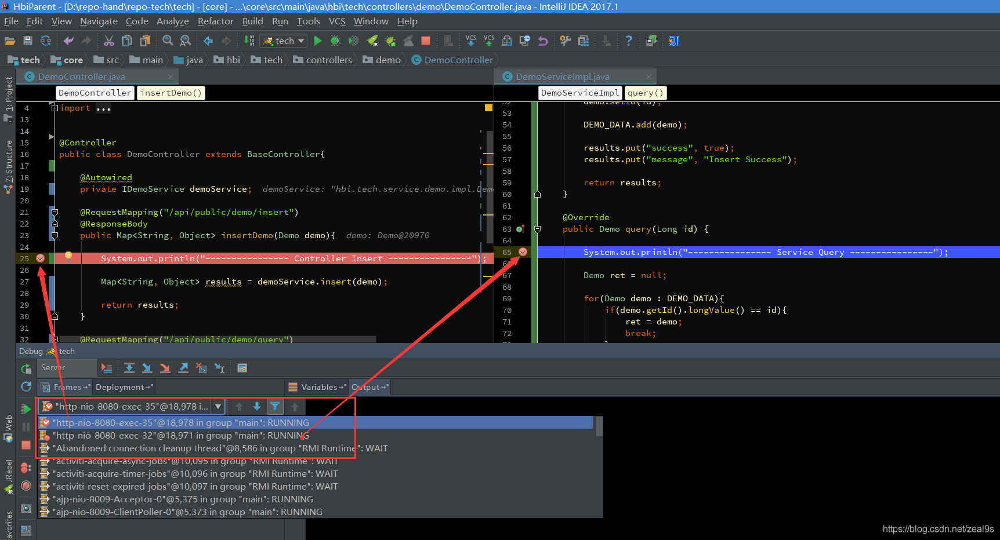
回退断点
不知道大伙有没有遇到这样一个问题，当我们进行debug时，通常不会进入某个方法一步一步的执行，而是选择性的跳过；当你想要回头观察某个变量的值得变化时，而你刚好没有跟进去，跳过了这个方法，这个时候，变量就被赋值了，我们通常的做法是重来一次，其实IDEA的调试功能是非常强大的，可以回退断点。
首先认识下这个方法调用栈，如图8.1，首先请求进入DemoController的insertDemo方法，然后调用insert方法，其它的invoke我们且先不管，最上面的方法是当前断点所在的方法。
[图8.1] 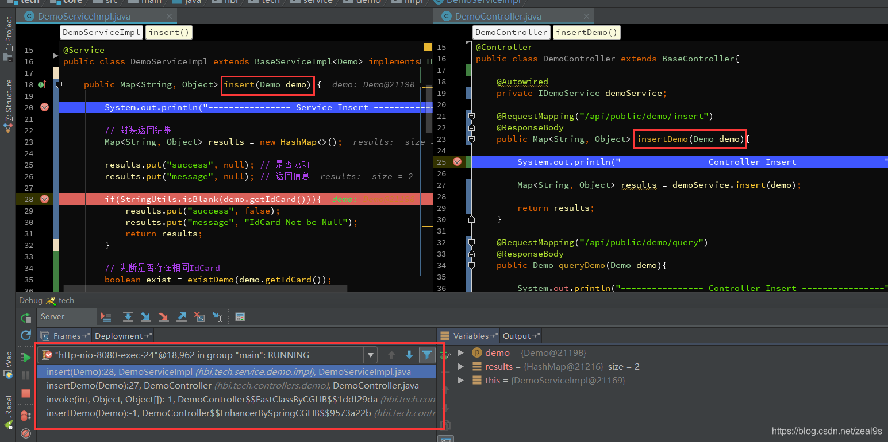
所谓的断点回退，其实就是回退到上一个方法调用的开始处，在IDEA里测试无法一行一行地回退或回到到上一个断点处，而是回到上一个方法。 回退的方式有两种，一种是Drop Frame按钮(图8.2)，按调用的方法逐步回退，包括三方类库的其它方法(取消Show All Frames按钮会显示三方类库的方法，如图8.3)。
第二种方式，在调用栈方法上选择要回退的方法，右键选择Drop Frame(图8.4)，回退到该方法的上一个方法调用处，此时再按F9(Resume Program)，可以看到程序进入到该方法的断点处了。
但有一点需要注意，断点回退只能重新走一下流程，之前的某些参数/数据的状态已经改变了的是无法回退到之前的状态的，如对象、集合、更新了数据库数据等等。
图[8.2]

图[8.3] 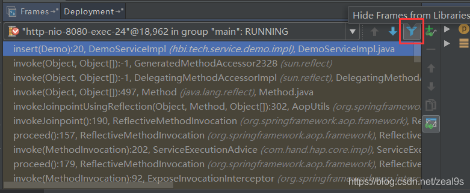
图[8.4] 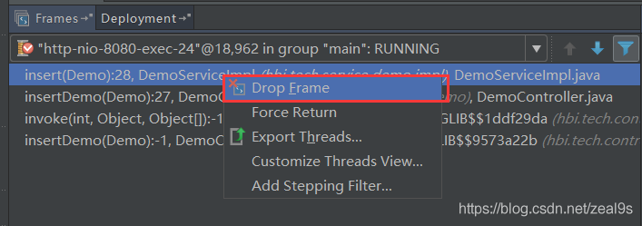
我们来看看熟悉的调试窗口： 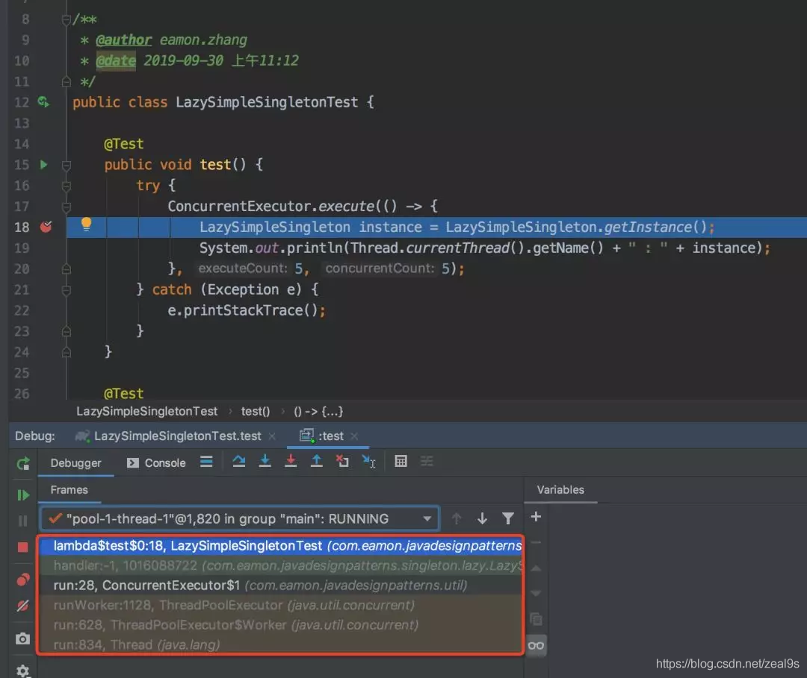
使用红色框框出来的部分，表示当前程序执行到哪一块，哪一部分，你可以尝试用鼠标点点看，你会发现编辑器会跳转到对应的代码中，当然当前断点的位置通常会在列表的第一条。然后我们使用右键单击，你就可以看到如下图所示： 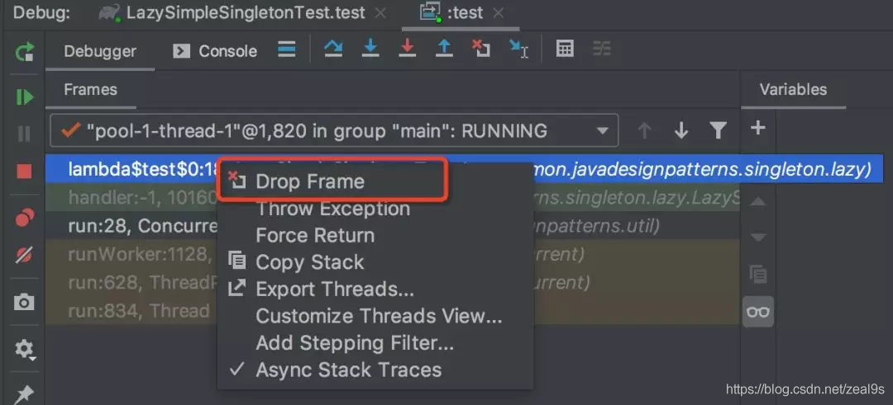
或者你也可以在下图中找到 Drop Frame： 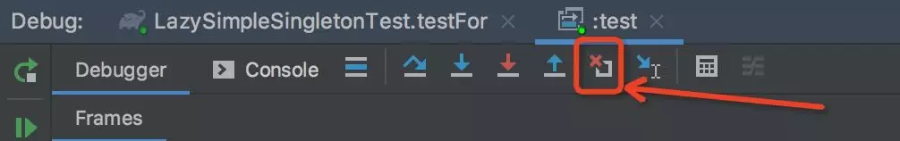
在IDEA中，所谓的回退，叫 Drop Frame，选择Drop Frame后，程序会跳转回调用当前这个方法的地方，当然已经改变的值是不会恢复的。但是当该方法再次被调用时，你可以观察到某个变量什么时候被改变，至少我们不用再去重新运行一遍程序。
临时断点
所谓临时断点就是只断一次，IDEA默认断点会一致存在。如果你只需要暂停一次，那么使用临时断点会比较方便，因为暂停一次之后断点就自动消失了，不用手动取消。
临时断点可以通过在打断点时按住 Alt 或者 option 键，然后创建断点。也可以通过右键断点处，选择 more 然后在窗口中选中 Remove once hit 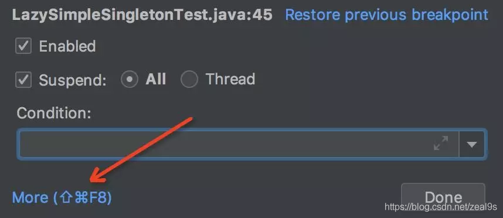 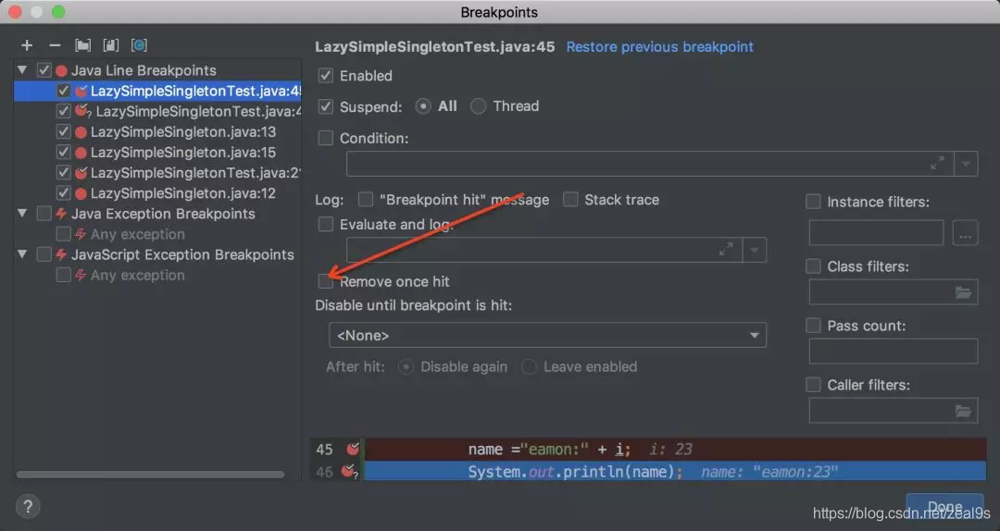
中断Debug
想要在Debug的时候，中断请求，不要再走剩余的流程了？
有些时候，我们看到传入的参数有误后，不想走后面的流程了，怎么中断这次请求呢(后面的流程要删除数据库数据呢…)，难道要关闭服务重新启动程序？嗯，我以前也是这么干的。
确切的说，我也没发现可以直接中断请求的方式(除了关闭服务)，但可以通过Force Return，即强制返回来避免后续的流程，如图9.1。
点击Force Return，弹出Return Value的窗口，我这个方法的返回类型为Map，所以，我这里直接返回 results，来强制返回，从而不再进行后续的流程。或者你可以new HashMap<>()。 [图9.1] 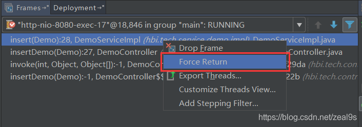
[图9.2] 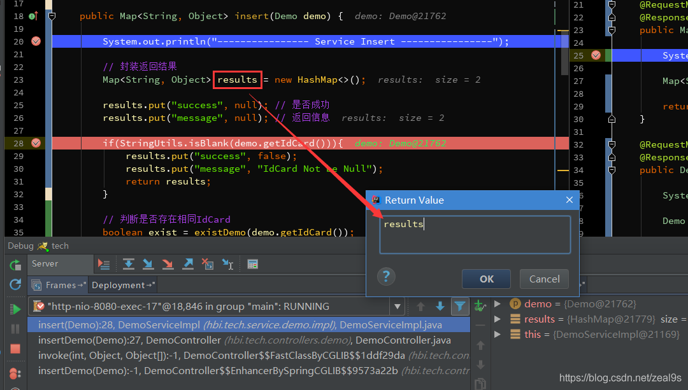